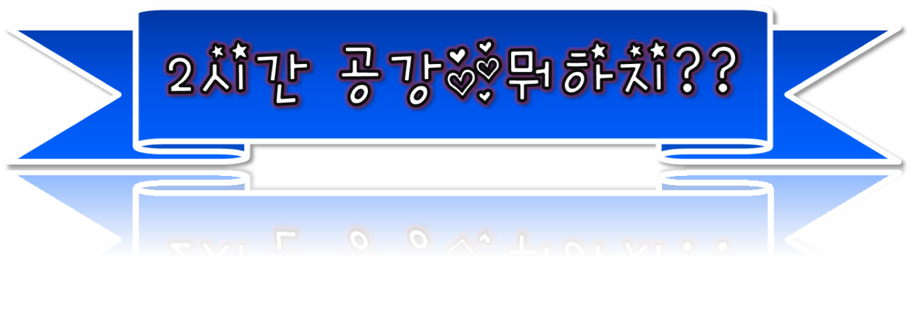
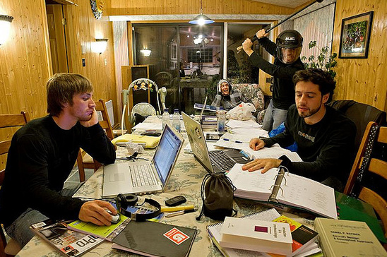
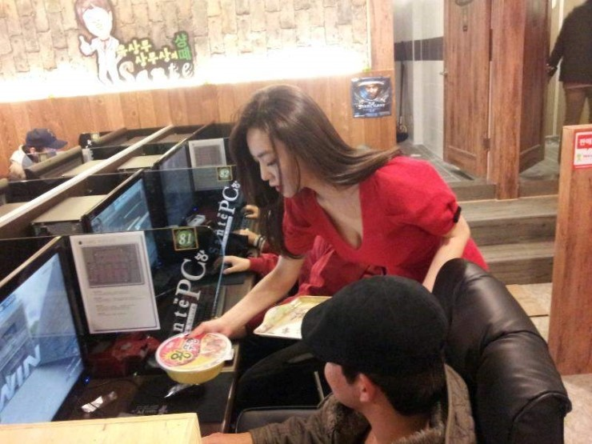
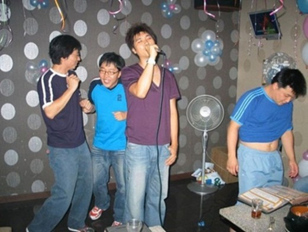
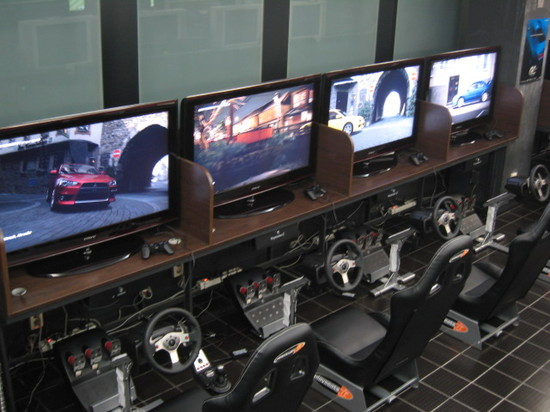

★. 스터디 그룹하기
친구들과 스터디그룹을 만들어 공강시간 활용하기
★. 당구장 가기
변경환 당구 클럽이 후문에서 가깝고 싸다.

★. 피시방 가기
후문 쪽에 루나 pc방과 라임 pc방이 좋다.

★. 노래방가기
정문쪽이 싼 곳이 많다
★. 과제하기

★. 플스방 가기
애들이 짝수명일땐 플스방을 가서 스트레스를 해소하는 것도 좋다.
어대역쪽으로 가는 길에 있다.